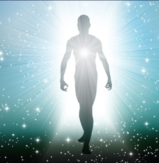

EL ALMA NUESTRO SER
El alma del ser humano se considera como la parte intangible que habita en el cuerpo que nos da la capacidad de pensar y de sentir, es capaz de dar vida al organismo y es la esencia inmaterial que define al individuo y a la humanidad. Existen teorias que dicen que para conectar con la energía de tu alma y sentir mejor su voz, necesitas poder separarte de los pensamientos . A través de la meditación, aprendes que no eres tus pensamientos, sino la consciencia que los escucha Componentes del alma según diferentes perspectivas:
Filosofía:Platón, por ejemplo, propuso una división del alma en tres partes: la lógica (razón), la irascible (emociones) y la concupiscible (deseos).
Psicología bíblica: Considera que el alma se compone del intelecto, las emociones y la voluntad, representando la personalidad, la capacidad de sentir y tomar decisiones.
Tradición védica:La ve como el Ser (Atman), una sustancia eterna y consciente diferente del cuerpo.
Visión general:Se entiende que el alma alberga la personalidad, las emociones, la capacidad de pensar y tomar decisiones, y la esencia individual de cada persona.
En resumen, el alma es un concepto complejo que se entiende como la parte inmaterial y esencial de un ser humano, responsable de su identidad, conciencia, emociones y capacidad de decisión.